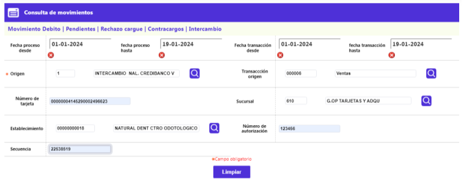
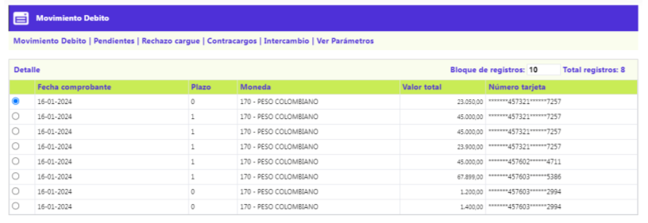

Consulta de movimientos
A través de esta pantalla se posibilita la consulta por diferentes criterios, de la información del movimiento transaccional que viaja hacia y desde los compensadores.
Ver parámetros (Filtro): Conjunto de campos que contiene las diferentes variables que pueden ser tomadas individualmente o combinadas y una vez diligenciados y/o seleccionados basta con presionar el botón Intro para obtener la información deseada. Es necesario ingresar al menos un grupo de las fechas y un origen para realizar la búsqueda, los demás campos son opcionales.
El formulario cuenta con las siguientes opciones: Movimiento debito, Pendientes, Rechazo cargue, Contracargos y Intercambio .

|
Fecha proceso desde |
Este campo permite ingresar cualquier dato válido con el formato YYYY-MM-DD, debe ser menor o igual a la fecha del sistema. |
|
Fecha proceso hasta |
Este campo permite ingresar cualquier dato válido con el formato YYYY-MM-DD, debe ser menor o igual a la fecha del sistema. |
|
Fecha transacción desde |
Este campo permite ingresar cualquier dato válido con el formato YYYY-MM-DD, debe ser menor o igual a la fecha del sistema. |
|
Fecha transacción hasta |
Este campo permite ingresar cualquier dato válido con el formato YYYY-MM-DD, debe ser menor o igual a la fecha del sistema. |
|
Origen |
Lista de valores parametrizada mediante la opción Orígenes de transacciones del Núcleo, que permite seleccionar el origen de movimiento que se quiera consultar |
|
Transacción interna |
Campo con lista de valores, de la que se selecciona la transacción por empresa que se quiera consultar |
|
Número de tarjeta |
Este campo permite ingresar cualquier valor alfanumérico de 23 caracteres, corresponde al número de tarjeta que se quiera consultar. |
|
Sucursal |
Admite cualquier valor numérico de máximo 4 dígitos. Posee lista de valores poblada a través de la opción Estructura orgánica del Núcleo, de la que puede seleccionarse la oficina a consultar. |
|
Establecimiento |
El campo Establecimiento admite cualquier valor numérico de máximo 11 dígitos. Posee lista de valores poblada por medio de la opción Orígenes de transacciones del Núcleo, de la que puede seleccionarse aquel para el cual se desee consultar su movimiento de intercambio. |
|
Número autorización |
El campo número de autorización es alfanumérico de hasta 6 posiciones |
|
Secuencia |
El campo secuencia es númerico de hasta 8 dígitos. |
El sistema muestra los datos de acuerdo a los parámetros ingresados, se debe ingresar a cada una de las opciones para ver la información, en esta parte hay una opción Ver Parámetros, la cual permite regresar al primer formulario.

Movimiento debito | Pendientes | Rechazo cargue | Contracargos | Intercambio | Ver Parámetros